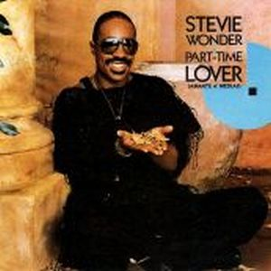
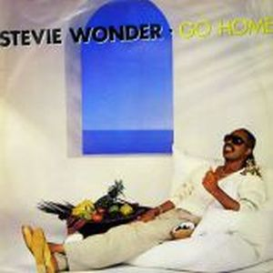
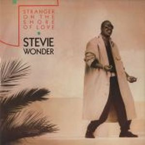
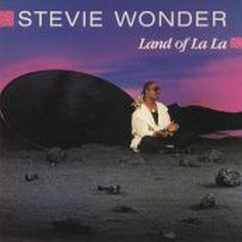
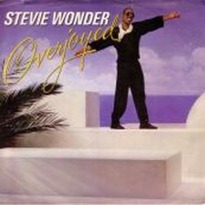

In Square Circle es un álbum sobresaliente en ventas, con un primer single llamado "Part time lover" que copó las primeras posiciones de medio mundo. Se trataba de un sencillo rítmico y pegadizo que contaba con la colaboración en los coros de Luther Vandross, siendo la primera canción de la historia en alcanzar a la vez el número 1 de cuatro listas distintas del Billboard; pop, r&b, dance, y adult contemporany, logrando también ser nominada a los premios Grammy. Dentro del álbum también podemos encontrar canciones de alto nivel como la delicada
"Overjoyed", compuesta años atrás por Stevie Wonder para The secret Life Of Plants pero no publicada, "Go Home" o "I Love Too Much"
Este disco llevaba 5 años trabajándolo y puliéndolo para poder lanzarlo Stevie Wonder. Compaginará este lanzamiento con colaboraciones como “I Feel For You” de Chaka Khan, “There Must Be An Angel (Playing With My Heart)” de Eurythmics, y ayudas benéficas como “We Are the World” en el USA for Africa o “That’s What Friends Are For” junto a Dionne Warwick, Elton John y Gladys Knight. Una de las primeras canciones que se pusieron a beneficio de la causa contra el sida, consiguiendo un nuevo premio Grammy.




